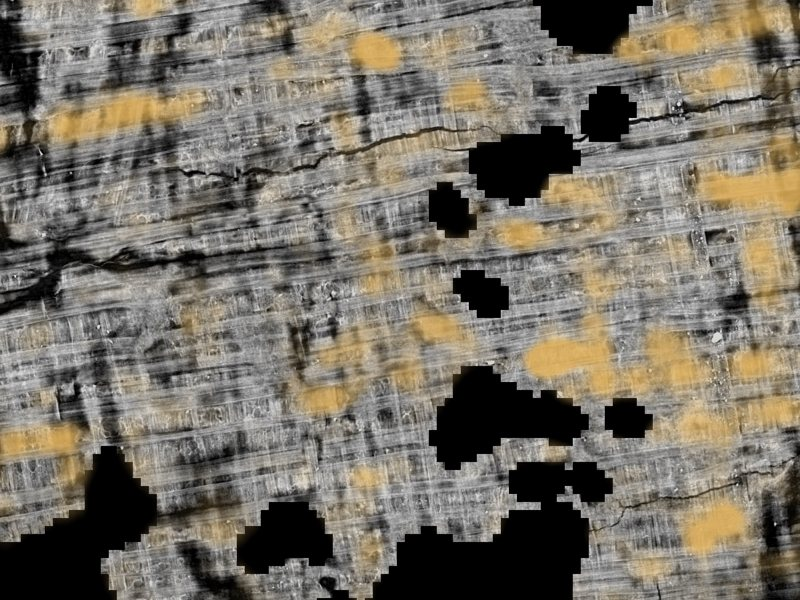

PHerc. 1447 · Biblioteca Nazionale di Napoli
Where the letters appeared
In September 2026 the Vesuvius Challenge team reported letters inside this still-rolled scroll. The six pieces here include the spot they pointed to, and three neighbouring wraps.

6 pieces to explore
Where the letters appeared
The small piece of scroll where the team reported finding letters.
Explore →
Wrap 58
One full turn of the rolled-up scroll, about 4 × 7 cm, flattened out.
Explore →
Wrap 60
Two turns deeper into the same scroll.
Explore →
Wrap 62
Another two turns in, with some of the clearest rows of marks.
Explore →
The bright patch
A smaller piece with strong, bold marks.
Explore →
The puzzle piece
A wide piece full of activity. What do you see?
Explore →